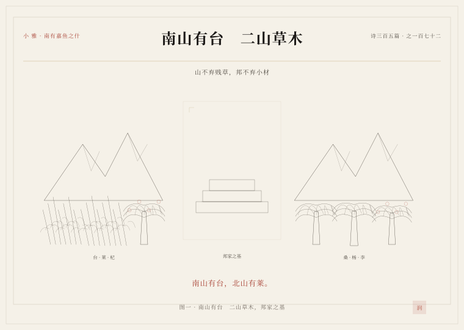
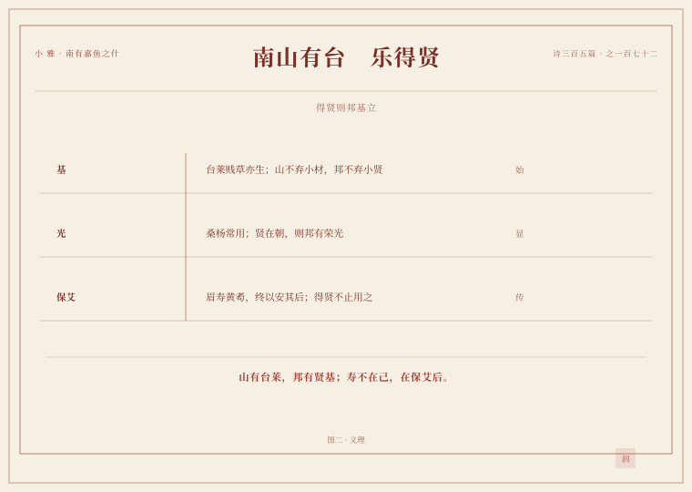

第一百七十二篇 南山有台
小雅 · 南有嘉鱼之什 SJ172
朗读 · 普通话
依经文原文朗读，章次不读出；配古琴底乐，不改速、不加拖腔。全库同一音色（豆包 TTS），非播音员录制。
一 解题
诗三判：
- 谁在说：颂贤之主，或燕贤之宾。南山有台，北山有莱；乐只君子，邦家之基。
- 说什么事：五章。每章以南山、北山二草二木对举，递颂君子「邦家之基」「邦家之光」「民之父母」「德音不已」「保艾尔后」。
- 为何编在此：南有嘉鱼乐与贤，南山有台乐得贤；一「与」一「得」，一宴一颂。
得贤则邦家有基。
《毛序》：「《南山有台》，乐得贤也。得贤则能为邦家立太平之基矣。」
朱子《诗集传》：「兴也。台，莎草。莱，藜也。只，语辞。君子，指宾客。基，基址。光，荣光。杞，枸杞。李，李树。栲，山樗。杻，檍也。枸，枳枸。楰，鼠梓。遐，何。眉寿，长寿。黄耇，老人。保艾，安养也。」
本库的看法：《南山有台》不是一首泛颂寿的诗，是一首「以山草山木立邦基」的诗。
台、莱是贱草，桑、杨是常用，杞、李是民食，栲、杻是良材，枸、楰是杂木；山不弃贱草，邦不弃小材。
五章由「基」而「光」，由「光」而「父母」，由「父母」而「德音」，终以「保艾尔后」：得贤不是用其力，是安其后。
须辨：台是莎草，不是台榭；莱是藜，不是莱国；栲是山樗，不是拷打；杻是檍木，不是杻械；枸是枳枸，不是枸杞；楰是鼠梓，不是楰树泛称。断语：山有台莱，邦有贤基；寿不在己，在保艾后。
先辨五事：「台」是莎草，不是台榭；「莱」是藜，不是莱国；「栲」是山樗，不是拷打；「杻」是檍木，不是杻械；「枸」是枳枸，不是枸杞。
二 经文
第一章
南山有台，北山有莱。乐只君子，邦家之基。
乐只君子，万寿无期。
第二章
南山有桑，北山有杨。乐只君子，邦家之光。
乐只君子，万寿无疆。
第三章
南山有杞，北山有李。乐只君子，民之父母。
乐只君子，德音不已。
第四章
南山有栲，北山有杻。乐只君子，遐不眉寿？
乐只君子，德音是茂。
第五章
南山有枸，北山有楰。乐只君子，遐不黄耇？
乐只君子，保艾尔后。
三 韵读
- 一章：台、莱、基、期，之部相叶。声厚。
- 二章：桑、杨、光、疆，阳部相叶。声扬。
- 三章：杞、李、母、已，之部相叶。声亲。
- 四章：栲、杻、寿、茂，幽、之相叶。声老。
- 五章：枸、楰、耇、后，侯、之相叶。声远。
读法：五章皆以二山二木起，句法同而意递进。「基」是始，「光」是显，「父母」是亲，「眉寿」是久，「保艾后」是传。
五章如五级台阶，一级比一级远。
四 字义与名物
- 台：莎草。莱：藜。乐只：乐哉。君子：贤宾。基：基址。无期：无尽。
- 桑：桑树。杨：杨树。光：荣光。无疆：无穷。
- 杞：枸杞。李：李树。民之父母：爱民如子。德音：令名。不已：不止。
- 栲：山樗。杻：檍木。遐：何。眉寿：长寿。茂：盛。
- 枸：枳枸。楰：鼠梓。黄耇：黄发老人。保艾：安养。尔后：你的后代。
五 今译
一章：南山有莎草，北山有藜。乐哉君子，是邦家的基址。乐哉君子，万寿无尽。
二章：南山有桑，北山有杨。乐哉君子，是邦家的荣光。乐哉君子，万寿无穷。
三章：南山有枸杞，北山有李。乐哉君子，是民之父母。乐哉君子，德音不止。
四章：南山有山樗，北山有檍木。乐哉君子，怎不长寿？乐哉君子，德音盛茂。
五章：南山有枳枸，北山有鼠梓。乐哉君子，怎不黄发高寿？乐哉君子，安养你的后代。
六 章旨
- 一章：台莱贱草，是「山不弃」；邦家之基，是「贤为基」；基在贱草，贤在小材。
- 二章：桑杨常用，是「山有材」；邦家之光，是「贤为光」；光不自照，因人而照。
- 三章：杞李民食，是「山养民」；民之父母，是「贤养民」；父母不是权位，是养育。
- 四章：栲杻良材，是「山有良」；眉寿德茂，是「贤久」；寿与德并，方为眉寿。
- 五章：枸楰杂木，是「山不遗」；保艾尔后，是「贤传」；得贤之终，在安其后。
七 诗教
- 邦基在贤：山以草木为基，邦以贤才为基；无贤，则基虚。
- 不弃小材：台莱贱草亦生，枸楰杂木亦用；弃小材，则大材不附。
- 寿以德：眉寿、黄耇，皆与德音并称；无德之寿，只是老。
- 保艾后：得贤不止用之，要安其家、及其后；安后，则贤不携贰。
八 分寸与边界
- 不把「台」读成台榭：台是莎草；读成台，则「南山有台」成建筑。
- 不把「莱」读成莱国：莱是藜；读成国，则「北山有莱」无草。
- 不把「栲」读成拷打：栲是山樗；读成拷，则木名失。
- 不把「杻」读成杻械：杻是檍木；读成刑具，则山木成狱具。
- 不把「枸」读成枸杞：枸是枳枸；与三章杞混，则二木不分。
九 存疑
- 诗旨：毛序「乐得贤」，朱子从之；一说「燕飨之乐」。本库从乐得贤。
- 「台」：毛传「夫须」，即莎草；从莎草。
- 「栲」：毛传「山樗」；从山樗。
- 「枸」：毛传「枳枸」；从枳枸，不从枸杞。
- 「保艾」：毛传「艾，养也」；从安养。
十 跨典
- 《诗经·小雅·南有嘉鱼》「乐与贤」；此篇「乐得贤」，一与一得。
- 《论语》「为政在人」；此篇邦家之基，正是人。
- 《孟子》「老吾老以及人之老」；此篇「民之父母」，是推恩。
十一 双卡与图
六对：
| 台（莎草） |
台（台榭） |
| 莱（藜） |
莱（莱国） |
| 栲（山樗） |
栲（拷打） |
| 杻（檍木） |
杻（杻械） |
| 枸（枳枸） |
枸（枸杞） |
| 保艾（安养） |
保艾（保护艾草） |

图一 · 南山有台 二山草木，邦家之基

图二 · 南山有台 得贤安后，基光父母